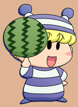
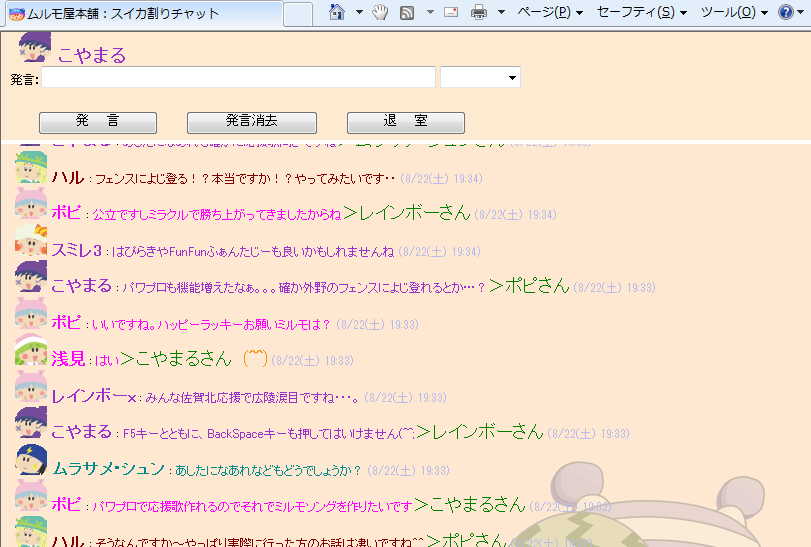
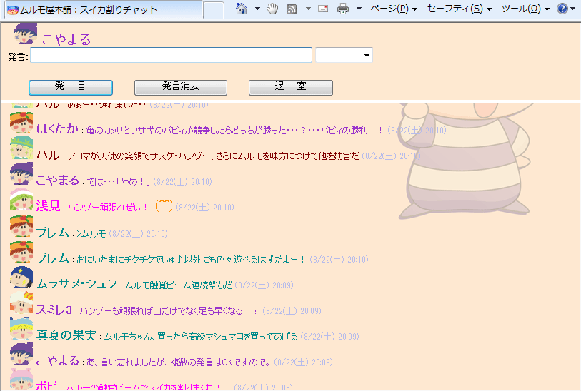
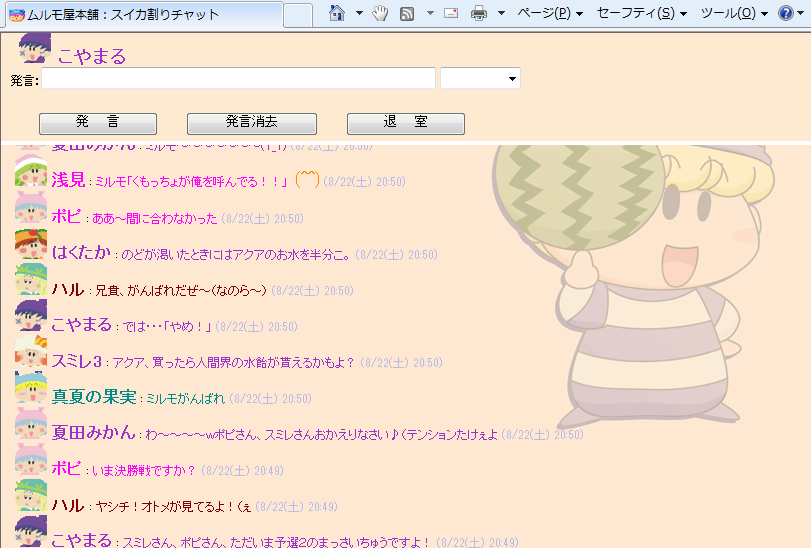
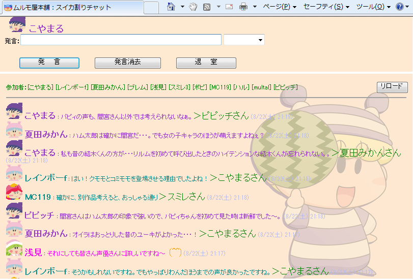
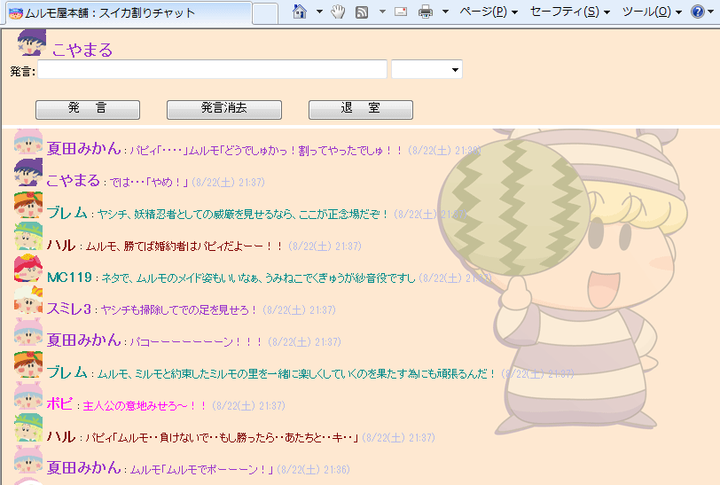
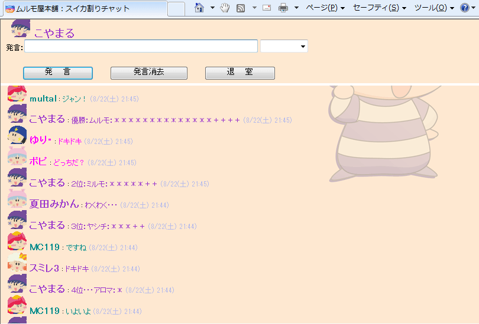

|
スイカ割りチャットの記録 |
|
||
|
スイカ割りチャットの記録 |
|
||
|  | |||
|
２００９年８月２２日（土） １９：００〜２２：００に、今年３回目となるチャット、『スイカ割りチャット』を開催しました。今回もたくさんの方にご参加いただき、本当にありがとうございました。 今回はスイカ割りをお題に加え、チャット内で妖精スイカ割り大会の企画を行いました。その模様を含め、簡単に紹介しますね。 (2009/8/25) |
|||
↓夏らしく、最初は高校野球や応援歌の話題で盛り上がりました

↓チャット内でスイカ割り大会を行いました（掲示板にて事前予告あり）
|
★妖精スイカ割り大会★ ルール なお、勝者が選ばれる基準としては、応援メッセージの数もそうですが、 出場メンバー： |
↓予選１回戦の模様

ネタ賞 アロマが天使の笑顔でサスケ・ハンゾー、さらにムルモを味方につけて他を妨害だ（ハルさん） 予選結果（＊は応援ポイント、＋はネタ賞のポイント加算（２点）） パピィ：＊＊ |
↓予選２回戦に向けて、ガイア族と時の妖精の代表を１名ずつ選びました
アクアとベルルが選ばれました！（ダントツの票数で） |
↓予選２回戦の模様

ネタ賞 ミルモ、負けたらリルムの特製料理が待ってるぞ！（ブレムさん） 予選結果（＊は応援ポイント、＋はネタ賞のポイント加算（２点）） ミルモ：＊＊＊＊＊＊＊＊＊＋＋＋＋ |
↓途中、アニメミルモの声優さんの話題で盛り上がりました

↓決勝戦の模様

ネタ賞 ムルモ！パピィが大事な大事な特大マシュマロを食べようとしているよ！（レインボーさん） |
↓決勝戦の結果は・・・？

決勝戦の結果 ４位・・・アロマ：＊ ・・・ムルモの圧勝で終わりました。おめでとう、ムルモ(^^) |
 |